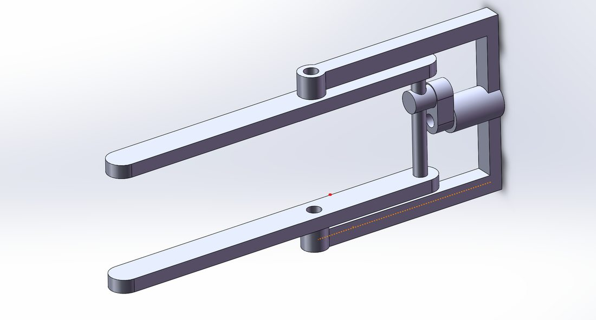
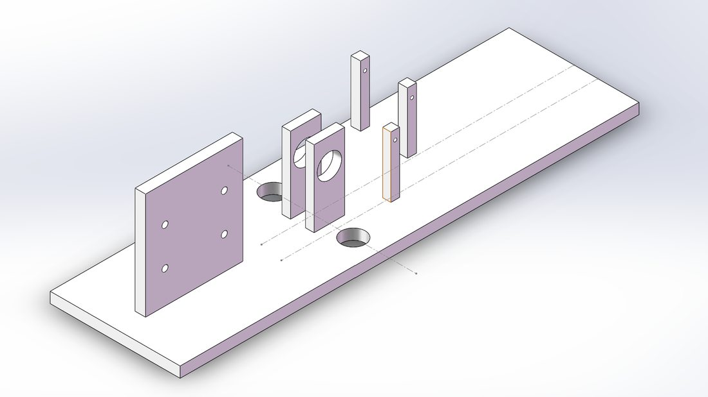
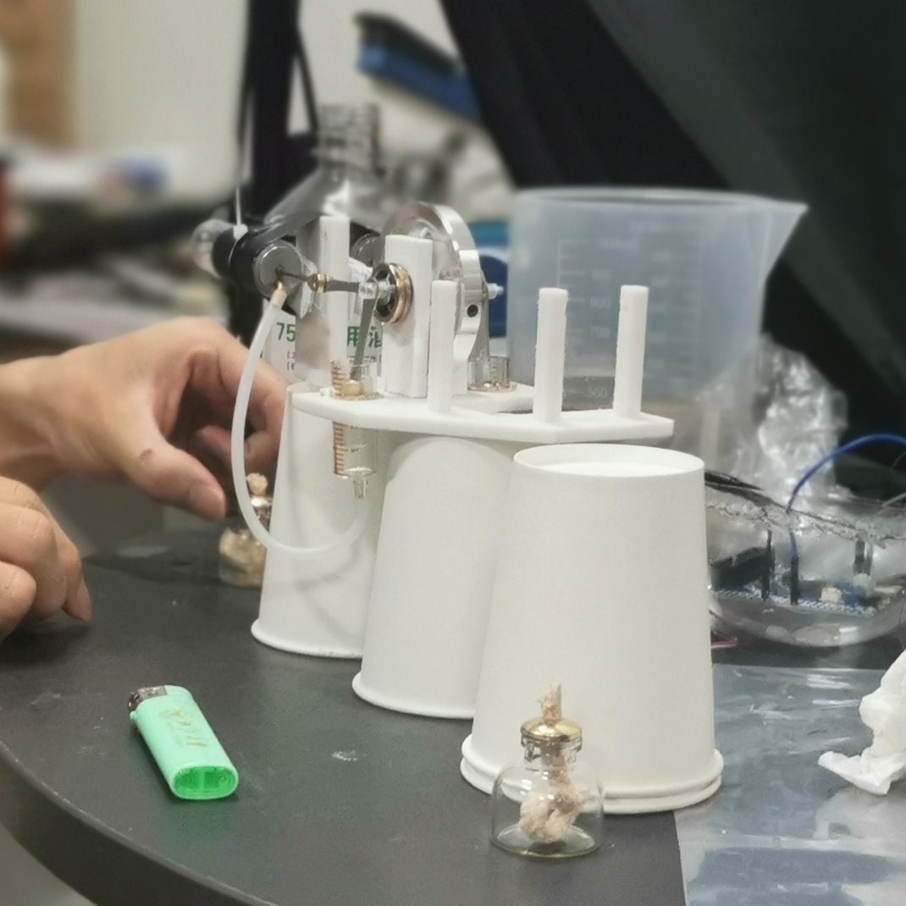

仿生机器鱼的驱动与传动机构改进Driving & Transmission Improvement of a Biomimetic Robotic Fish
针对课题组"柔性电液泵机器鱼"动力不足的痛点，改良斯特林发动机作为新型驱动源，并自主设计"圆周运动→垂直摆动"的跨平面传动机构与机身骨架，完成等比例样机制作与游动测试。To address the underpowered "soft electro-hydraulic pump" robotic fish, I introduced a modified Stirling engine as a new power source and self-designed a cross-plane "rotation → vertical oscillation" transmission and body frame, building and testing a scaled prototype.
项目背景Background
课题组以"柔性电液泵"（一种仿生双向变量液压泵，发表于 Nature Communications）为基础，探索其在微型机器鱼中的应用。现有电液泵受电池与电子技术限制存在动力不足问题，是制约微型机器鱼实用化的两大难点之一（另一为机械结构）。The group builds on a "soft electro-hydraulic pump" (a biomimetic bidirectional variable hydraulic pump published in Nature Communications) for micro robotic fish. Limited by battery and electronics, the pump is underpowered—one of the two main barriers to practicality (the other being mechanical structure).
我的具体工作What I Did
- 驱动源改良：调研大量文献后选定斯特林发动机作为替代驱动方案，从原理出发计算所需扭矩，调整各部件间距，解决部件间阻力与衔接难题，使驱动系统正常运转。Power source: after a literature survey, chose a Stirling engine as an alternative driver; computed the required torque from first principles and tuned part spacing to overcome friction and coupling issues so the drive runs reliably.
- 运动转换机构设计（核心创新）：斯特林发动机输出的圆周运动平面与鱼翅摆动平面相互垂直，现有结构只能在同一平面内转换。自主设计出一套仅三个零件的机构，成功实现圆周运动 → 垂直上下摆动的转换。Motion-conversion mechanism (key innovation): the engine's rotation plane is perpendicular to the fin's oscillation plane, while existing mechanisms only convert within one plane. I designed a three-part mechanism that converts rotation into vertical up-and-down oscillation.
- 机身骨架设计：为加热/冷却气缸、输出飞轮、传动机构设计一体化支架，并迭代精简体积。Body frame: designed an integrated frame for the heating/cooling cylinders, output flywheel and transmission, iterating to reduce its size.
- 建模与样机：用 CAD 建模、3D 打印制作等比例放大模型并测试。Modeling & prototype: CAD modeling and 3D printing of a scaled prototype, followed by testing.
成果与亮点Results & Highlights
- 项目获浙江大学暑期学生科研实践优秀展报奖。Won the ZJU Summer Research Best-poster Award.
- 完成"斯特林驱动样机 + 自创运动转换机构 + 机身骨架"三大模块的设计—制造—测试闭环。Closed the design–build–test loop across three modules: Stirling drive prototype, the original motion-conversion mechanism, and the body frame.
- 将课堂理论（CAD / 力学 / 热力学 / 电子学）首次落地到真实工程样机。Turned classroom theory (CAD / mechanics / thermodynamics / electronics) into a real engineering prototype for the first time.
项目图片Gallery




点击图片可查看大图。Click an image to view full size.